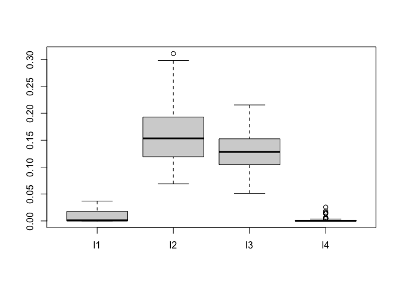

The bark package implements estimation for a Bayesian nonparametric regression model represented as a sum of multivariate Gaussian kernels as a flexible model to capture nonlinearities, interactions and feature selection.
Installation
You can install the released version of bark from CRAN with:
install.packages("bark")And the development version from GitHub with:
require("devtools")
devtools::install_github("merliseclyde/bark")(verify that the branch has a passing R CMD check badge above)
Example
library(bark)
set.seed(42)
traindata <- sim_Friedman2(200, sd=125)
testdata <- sim_Friedman2(1000, sd=0)
fit.bark.d <- bark(y ~ .,
data=data.frame(traindata),
testdata = data.frame(testdata),
classification=FALSE,
selection = TRUE,
common_lambdas = FALSE,
printevery = 10^10)
mean((fit.bark.d$yhat.test.mean-testdata$y)^2)
#> [1] 1920.283bark is similar to SVM, however it allows different kernel smoothing parameters for every dimension of the inputs as well as selection of inputs by allowing the kernel smoothing parameters to be zero.
The plot below shows posterior draws of the for the simulated data.
boxplot(as.data.frame(fit.bark.d$theta.lambda))
The posterior distribution for and are concentrated near zero, which leads to and dropping from the mean function.
Roadmap for Future Enhancements
Over the next year the following enhancements are planned:
port more of the R code to C/C++ for improvements in speed
add S3 methods for
predict,summary,plotadd additional kernels and LARK methods from AOS (2011) paper
better hyperparameter specification
If there are features you would like to see added, please feel free to create an issue in GitHub and we can discuss!